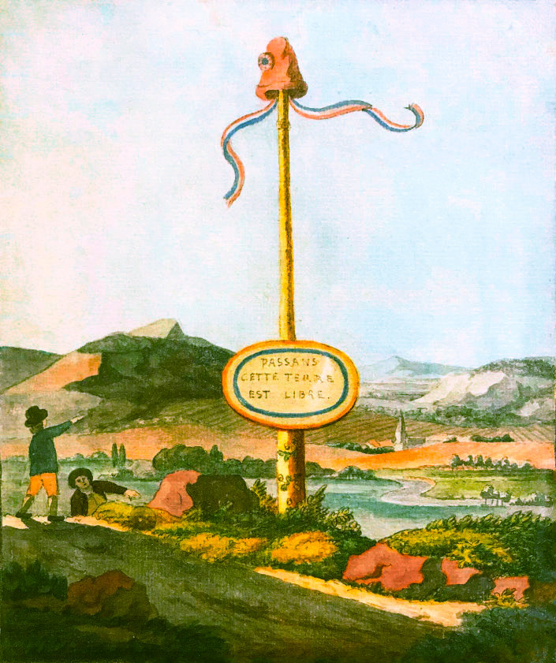
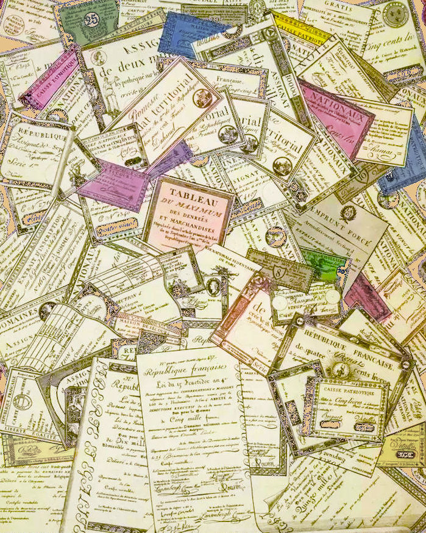
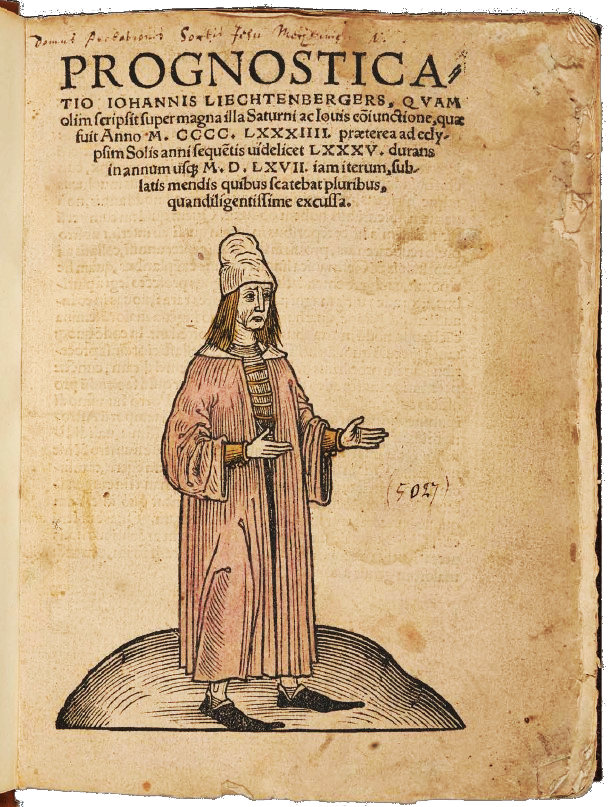
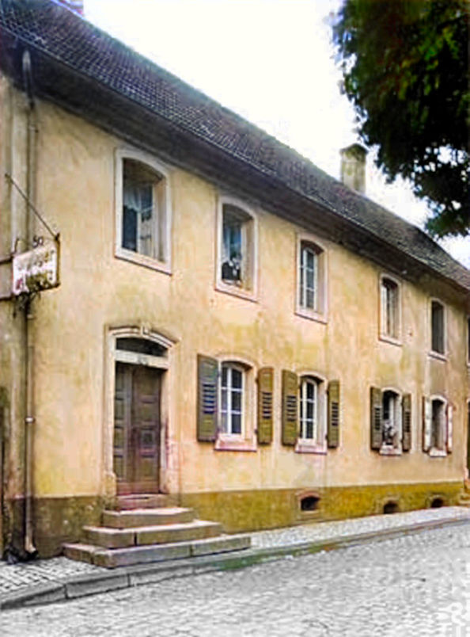
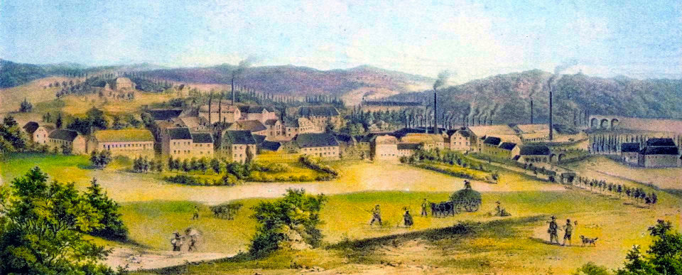
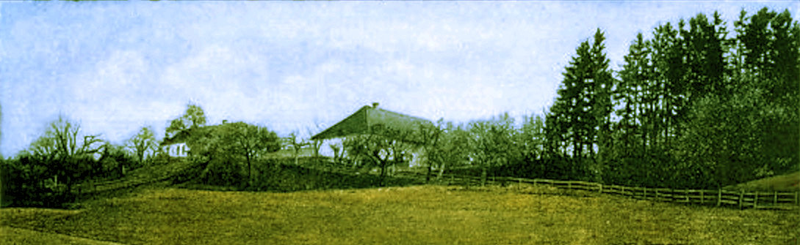
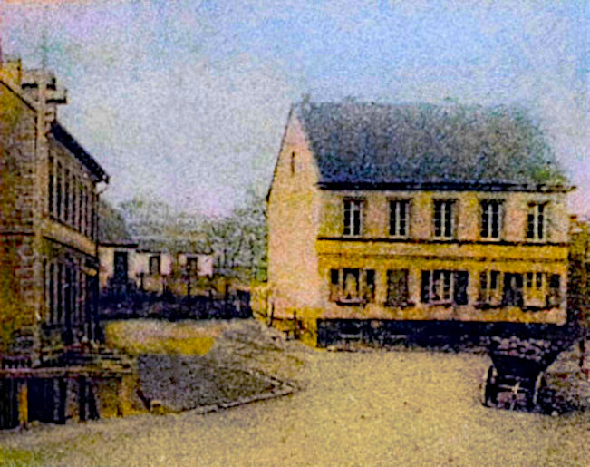
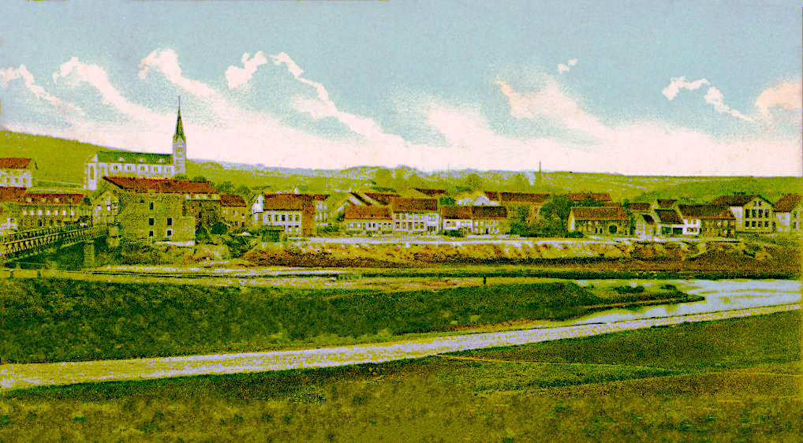

Goethes Zeichnung des Freiheitsbaumes von 1789
Die Familie Schleßmann Teil 3
Aufregende Zeiten und widerspenstiger Nachwuchs
Johann Peter Schleßmann, der einzige überlebende Nachkomme von Johann Christoph Schleßmann (1721-) und Louisa Caroline Kirsch (1736–1810), wurde am 2. Mai 1765 in Neunkirchen geboren. Er wählte einen unerwarteten Beruf: Er wurde Schneider. Vielleicht war er inspiriert von seinem Großvater, der vor seiner Tätigkeit als Lakai und Fruchtverwalter ebenfalls Schneider war.
Im Jahre 1791 heiratete Peter Jacobine Louise Philippine Lichtenberger (1771–1838), die Tochter des Pfarrers Georg Christoph Lichtenberger (1722–1773) und dessen zweiter Ehefrau Susanna Maria Katharina Gessler.
Peter Schleßmann und seine Familie lebten in einer ereignisreichen Zeit. Zuerst war es die Französische Revolution, die 1789 grundlegende Veränderungen für die Region an der Saar mit sich brachte. Neunkirchen gehörte nun zum "Département de la Sarre" mit Regierungssitz in Trier, die Amtssprache war Französisch, es gab einen gewöhnungsbedürftigen Revolutionskalender, man benutzte die französische Währung und brauchte weniger Steuern zu zahlen. Zu Neunkirchen gehörten jetzt zusätzliche Dörfer und Höfe.

Die Situation änderte sich 1815 schon wieder, als das Saardepartement preussisch wurde und zuerst zum Regierungsbezirk Trier und dann zur Rheinprovinz gehörte. Peter Schleßmann und seine Nachkommen erlebten in wenigen Jahrzehnten, wie sich die beschauliche kleine Landgemeinde Neunkirchen schnell und unaufhaltsam zu einem der bedeutendsten Zentren der Eisen- und Kohlenindustrie in der gesamten Region entwickelte.
Revolutionsgeld
Die Familie Lichtenberger
Georg Christoph Lichtenberger, der Vater unserer Vorfahrin Philippine, entstammte einer pfälzischen Pfarrersfamilie und wurde in Windesheim bei Bad Kreuznach geboren. Als junger Mann war er zuerst Pfarrer in Wiebelskirchen von 1745 bis 1749 und ab 1750 in Neunkirchen.
In erster Ehe war Philippines Vater mit Sophia Maria Mettel (1726–1763) verheiratet, der Tochter des in Teil 2 erwähnten Ottweiler Bürgermeisters Theodor Mettel, mit der er neun Kinder hatte. Nach deren Tod heiratete er Susanna Katharina Gessler, eine Pfarrerstochter aus Künzelsau in Württemberg. Mit ihr hatte noch weitere sechs Kinder, von denen aber nur zwei das Erwachsenenalter erreichten: Philippine und ihr Bruder Carl Sigmund.

Die Prognostica (15. Jhd.)
von Johannes Lichtenberger
Eigenhändig geschriebenes Horoskop
Die vielfältige Verzweigung der Lichtenberger innerhalb des
Landschaftsbereichs der Saar bedarf einer Sonderuntersuchung.
- Pfälzische Familien- und Wappenkunde Bd 5, 1966, S. 103
Landschaftsbereichs der Saar bedarf einer Sonderuntersuchung.
- Pfälzische Familien- und Wappenkunde Bd 5, 1966, S. 103
Die saarländischen Lichtenbergers lebten relativ bescheiden, aber ihre Verwandten in anderen Regionen Deutschland wurden bekannte Theologen, Philosophen oder Fabrikbesitzer. Der berühmte Gelehrte Georg Christoph Lichtenberg (1742-1799) gehört zur Familie (er änderte seinen Namen um Verwechslungen zu vermeiden), genau wie Philipp Markus Lichtenberger (1783-1842), der die Rheinschanze baute, aus der das spätere Ludwigshafen entstand, Theodor Lichtenberger (1844-1909), der das Salzbergwerk in Heilbronn bauen liess, oder auch der Textilfarbenfabrikant Casimir Ludwig Lichtenberger (1795-1858), der seine Farben in alle Welt exportierte.
Der bekannteste saarländische Spross der Familie ist ein entfernter Neffe unserer Vorfahrin Philippine, Carl Lichtenberger (1796-1883), der Leiter des Hauptbüros des Neunkircher Eisenwerks und Oberbuchhalter des unglücklichen Industriellen Carl Friedrich Stumm (1798–1848). Nach seiner Pensionierung machte Carl Lichtenberger sich einen Namen als Amateurastronom und erhielt dafür sogar einen Ehrendoktortitel.
Johann Peter Schleßmann und Philippine Lichtenberger
Die Verbindung zwischen Peter Schleßmann und Philippine Lichtenberger war kein Zufall: Peters einzige nahe Verwandte in Neunkirchen, seine Tante Alexandrina, hatte 1765 den Schreiner und Balgmacher Philipp Anschütz (1740–1820) geheiratet. Sie wohnten in der Heizengasse 4, direkt neben dem Pfarrhaus, wo die Lichtenbergers lebten. Peter kannte Philippine und ihren Bruder Sigmund schon seit seiner Kindheit.

Heizengasse 4 mit Pfarrhaus
Peter und Philippine (die sich manchmal auch Jacobine nannte) hatten 12 Kinder. Der älteste Sohn Johann wurde im Jahr vor der Eheschliessung geboren. Nur drei der Kinder heirateten. Als Schneider war Peter Schleßmann - wie fast alle Handwerker in Neunkirchen - kein besonders vielbeschäftigter Mann. Der Bedarf an maßgeschneiderter Kleidung hielt sich in Grenzen.
Das übliche Beinkleid der Männer im Alltag war die "Bux", eine Kniebundhose aus Leder. Sie war zwar bereits 1793 per Dekret verboten worden, blieb aber dennoch vor allem in Lothringen und an der Saar noch lange im Gebrauch und war unverwüstlich. Ansonsten nähten die Frauen die Kleidung für ihre Familie im Allgemeinen selbst. Nur zu besonderen Anlässen war ein Anzug oder ein "gutes" Kleid nötig, das man vom Schneider anfertigen liess.
Fast alle Einwohner Neunkirchens, auch die wohlhabenderen, betrieben nebenbei Landwirtschaft für den eigenen Gebrauch, hatten Obst- und Gemüsegärten und hielten sich Ziegen. Auf den späteren Personenstandseinträgen der Familie wird als Peters Beruf "Ackerer" angegeben. Das Leben der Einwohner Neunkirchens war geprägt von dem Eisenwerk, das seit 1806 den Brüdern Stumm gehörte und unter deren Leitung stetig ausgebaut und modernisiert wurde. Viele Neunkircher Männer arbeiteten "auf der Hütte", auch wenn sie im Hauptberuf Ackerer oder Handwerker waren. Die Hütte gab ihnen ein geregeltes und vergleichsweise hohes Einkommen. Bei den Bauern mussten oft die Frauen die Landwirtschaft alleine betreiben, während Ehemann und Söhne im Eisenwerk arbeiteten. Das taten auch zwei Söhne von Peter und Philippine.

Das Neunkircher Eisenwerk
» Johann Peter Schleßmann (1765–1829)
heiratete Jakobine Louise Philippine Lichtenberger (1771–1838) in Neunkirchen 1791
heiratete Jakobine Louise Philippine Lichtenberger (1771–1838) in Neunkirchen 1791
und sie hatten die folgenden Kinder:
| Johann Schleßmann | 1791 – *Geburtsort unbekannt |
nach 1876 †Sterbeort unbekannt |
unverheiratet | |
| Katharina Schleßmann | 30.12.1792 – *Neunkirchen |
27.03.1871 †Ottweiler |
h. Carl Sigmund Lichtenberger in Dudweiler 09.03.1820 | |
| Susanna Wilhelmine Schleßmann | 02.06.1795 – *Neunkirchen |
06.01.1812 †Neunkirchen |
Todesursache Lungenentzündung | |
| Dorothea Catharina Schleßmann | 29.08.1797 – *Neunkirchen |
24.01.1867 †Wehrden |
unverheiratet | |
| Christian Friedrich Schleßmann | 05.03.1800 – *Neunkirchen |
16.12.1864 † Neuhaus |
unverheiratet, Beruf Schneider | |
| Carolina Dorothea Schleßmann | 12.05.1802 – *Neunkirchen |
09.11.1823 †Neunkirchen |
Todesursache Krankheit | |
| Henriette Barbara Schleßmann | 27.10.1804 – *Neunkirchen |
02.10.1867 †Wehrden |
h. Franz Kirschner in Neunkirchen 10.04.1828 | |
| Christine Jacobine Schleßmann | 27.08.1807 – *Neunkirchen |
02.03.1808 †Neunkirchen |
Todesursache Gicht | |
| Georg Ludwig Schleßmann | 18.01.1809 – *Neunkirchen |
17.04.1811 †Neunkirchen |
Todesursache Pocken | |
| Wilhelm Jacob Schleßmann | 22.03.1811 – *Neunkirchen |
03.08.1838 †Neunkirchen |
Beruf Hüttenarbeiter, Todesursache Explosion | |
| Friedrich Karl Schleßmann | 04.06.1813 – *Neunkirchen |
28.06.1900 †Neunkirchen |
h. Maria Elisabeth Dorst in Neunkirchen 19.05.1840 | |
| Philippine Schleßmann | 09.01.1816 – *Neunkirchen |
3.08.1829 Neunkirchen |
Todesursache Fieber |
Mit den Kindern von Peter und Philippine lief es nicht unbedingt so, wie die Eltern es sich vielleicht gewünscht hätten. Sechs der zwölf Kinder verstarben in jungen Jahren an Krankheiten. Drei Söhne und eine Tochter blieben ledig, die beiden anderen Töchter wurden vor der Heirat schwanger und verliessen Neunkirchen und ein weiterer Sohn starb mit 27 Jahren durch die Explosion eines Böllers. Über den ältesten Sohn Johann lässt sich nichts herausfinden. Nur der jüngste Sohn Karl, unser Vorfahre, blieb in Neunkirchen und erlernte das Schmiedehandwerk. Er heiratete zwar eine akzeptable Frau, aber erst nach dem Tod beider Eltern.
Peter Schleßmann starb am 24. April 1829 an "Auszehrung", ein Begriff, der früher vor allem für Tuberkulose ("Schwindsucht") verwendet wurde, nur wenige Monate vor seiner jüngsten Tochter.
Seine Frau Philippine starb am 9. August 1838, sechs Tage nach dem Unfalltod ihres Sohnes Jacob.
» Katharina Schleßmann und Carl Sigmund Lichtenberger
Katharina, das zweite Kind von Peter und Philippine, wurde am 30. Dezember 1792 in Neunkirchen geboren. Am 9. März 1820 heiratete sie ihren Onkel, den Förster Carl Sigmund Lichtenberger (1769-1852). Er war der Bruder ihrer Mutter Philippine. Carl Sigmund hatte seine erste Frau Dorothea Luise Carola Schmidt 1818 verloren. Wahrscheinlich half Katharina - als die älteste Tochter seiner Schwester - zunächst nur in seinem Haushalt und bei der Versorgung seiner vier Kinder mit. Offenbar entwickelte sich nach einigen Monaten eine engere Beziehung. Das erste Kind der beiden, Carl Christian, wurde bereits drei Monate nach der Eheschliessung geboren. Insgesamt hatten Katharina und Carl Sigmund sechs Kinder. Die Familie lebte im Forsthaus Neuhaus bei Saarbrücken. Katharina überlebte ihren Mann um fast 20 Jahre und starb am 27. März 1871 in Ottweiler.

Forsthaus Neuhaus
Katharina Schleßmann (1792–1871)
heiratete » Carl Sigmund Lichtenberger (1769–1852) in Dudweiler 09.03.1820
heiratete » Carl Sigmund Lichtenberger (1769–1852) in Dudweiler 09.03.1820
und sie hatten die folgenden Kinder::
| Carl Christian Lichtenberger | 18.06.1820 – *Friedrichsthal |
17.10.1891 †Ottweiler |
h. Sophie Elisabeth Büch in Heusweiler 05.11.1846 | |
| Friedrich Lichtenberger | 06.11.1821 – *Fischbach |
27.12.1870 †Trier |
unverheiratet | |
| Carl Heinrich Lichtenberger | 04.02.1825 – *Bildstock |
13.11.1866 †Thalfang |
h. Anna Gertrud Kreutz in Brotdorf 1850 | |
| Catharina Lichtenberger | 01.02.1829 – *Dudweiler |
12.08.1903 †Friedrichsthal |
unverheiratet | |
| Henrietta Lichtenberger | 05.04.1831 – *Saarbrücken |
um 1876 †Friedrichsthal |
h. Friedrich Wilhelm Bach in Neunkirchen 05.03.1857 | |
| Jacob Lichtenberger | 04.02.1838 – *Saarbrücken |
10.04.1858 †Landsweiler-Reden |
unverheiratet |

Schule Geislautern
» Henriette Barbara Schleßmann und Franz Kirschner
Henriette Barbara wurde am 27. Oktober 1804 geboren. Als sie am 10. April 1828 in Neunkirchen den Volksschullehrer Franz Kirschner (1798-1871) heiratete, hatten die beiden bereits eine 10 Monate alte gemeinsame Tochter. Franz Kirschner war den Sohn des Schreiners Jakob Kirschner und Anna Sophia Schneider aus Argenthal im Hunsrück.
Offenbar waren Henriettes Eltern ursprünglich gegen die Verbindung, denn Lehrer in ländlichen Regionen hatten zu jener Zeit einen recht niedrigen Status und ein sehr geringes Einkommen. Nachdem die Liebenden ein ganzes Jahr lang durchgehalten hatten und sich nicht auseinander bringen liessen, gaben die Eltern nach und stimmten der Eheschliessung zu.
Zunächst lebten Franz und Henriette in der Gegend von Simmern, wo Franz eine Anstellung hatte. 1838, im Jahr in dem Henriettes Mutter starb, wurde er zum ersten Lehrer der Volksschule Wehrden-Geislautern ernannt, und von da an wohnte die Familie in Wehrden bei Völklingen.
Franz und Barbara hatten sechs Söhne und vier Töchter, die fast alle eigene Familien gründeten und Kinder hatten. Alle Söhne wurden Bergmänner und die Töchter heirateten ebenfalls Bergmänner. Im Bergbau zu arbeiten war damals in Völklingen die beste Option für junge Männer.
Henriette Barbara Schleßmann (1804–1867)
heiratete » Franz Kirschner (1798–1871) in Neunkirchen 10.04.1828
heiratete » Franz Kirschner (1798–1871) in Neunkirchen 10.04.1828
und sie hatten die folgenden Kinder::
| Catharina Kirschner | 01.06.1827 – *Neunkirchen |
01.01.1894 †Dudweiler |
h. Friedrich Jacob Maul in Völklingen 06.10.1854 | |
| Franz Viktor Kirschner | 30.05.1829 – *Niederkumbd |
15.11.1903 †Dudweiler |
h. Magdalena Braun in Dudweiler 11.01.1855 | |
| Christian Kirschner | ~1832 – *Argenthal |
21.05.1897 †Dudweiler |
h. Maria Margaretha Engelmann in Sulzbach 26.05.1857 | |
| Heinrich Adolph Kirschner | 30.06.1833 – *Gehlweiler |
06.01.1901 †Dudweiler |
h. Amalia Margaretha Ganns in Dudweiler 04.10.1860 h. Katharina Henriette Klein in Sankt Johann 10.05.1879 |
|
| Christoph Peter Kirschner | 19.08.1835 – *Gehlweiler |
27.12.1906 †Gersweiler |
h. Carolina Margaretha Kramer in Gersweiler 13.09.1862 h. Catharina Kramer in Gersweiler 13.02.1866 |
|
| Anna Maria Kirschner | 09.12.1837 – *Gehlweiler |
24.11.1912 †Gersweiler |
h. Jakob Munzlinger in Völklingen 03.02.1866 | |
| Carolina Luisa Kirschner | 25.08.1840 – *Wehrden |
25.10.1920 †Dudweiler |
h. Mathias Friedrich Lorenz in Völklingen 06.02.1869 | |
| Wilhelm Christian Kirschner | 16.04.1842 – *Wehrden |
11.04.1864 †Wehrden |
unverheiratet | |
| Sophie Louise Kirschner | 15.05.1846 – *Wehrden |
11.03.1919 †Völklingen |
h. Christian Hassel in Völklingen 23.09.1869 | |
| Carl Friedrich Ludwig Kirschner | 12.07.1849 – *Wehrden |
01.12.1905 †Völklingen |
h. Elisabeth Quirin in Völklingen 7.02.1880 |
Barbaras ledige ältere Schwester Dorothea Catharina wohnte bei den Kirschners in Wehrden. Beim Tod ihrer Mutter war sie bereits 41 Jahre alt und ihre Schwester konnte ihre Hilfe im Haushalt und bei der Versorgung der zahlreichen Kinder sicher gut gebrauchen. Beide Schwestern starben 1867: Dorothea Katharina am 24. Januar und Henriette am 2. Oktober. Franz Kirschner überlebte seine Frau nur um wenige Jahre. Er starb am 29. Januar 1871 in Wehrden.

Unser Vorfahre Friedrich Karl Schleßmann, der jüngste Sohn von Peter und Philippine, war der einzige männliche Nachfahre, der heiratete und Kinder und Enkel bekam, die den Namen Schleßmann weitergaben bis ins nächste Jahrtausend. Alles darüber steht im folgenden Teil der Schleßmann-Saga:
Wehrden
» Zu Teil 4 Karl und Maria Schleßmann
» Teil 1 Peter und Anna Schleßmann
» Teil 2 Christoph und Louisa Schleßmann
Teil 3 Peter und Philippine Schleßmann
» Teil 4 Karl und Maria Schleßmann
Kontakt
Friederike Schneider (geb. Schleßmann)basehubb @ gmail.com